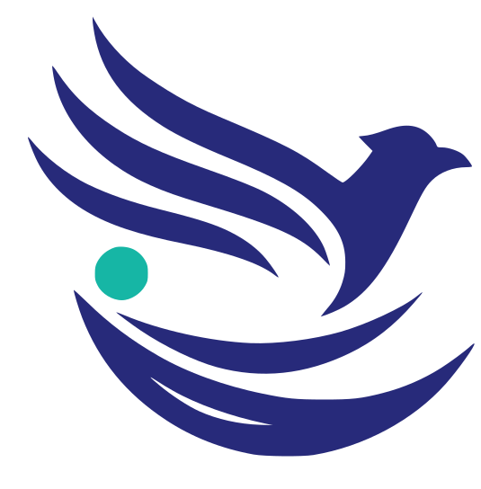

<!DOCTYPE html>
<html lang="en">
<head>
<meta charset="UTF-8">
<meta name="viewport" content="width=device-width, initial-scale=1.0">
<title>P05 Hearth — approved footer</title>
<script>
(function(){try{var p=new URLSearchParams(location.search).get('theme');
if(p!=='dark'&&p!=='light')p=matchMedia('(prefers-color-scheme: dark)').matches?'dark':'light';
document.documentElement.setAttribute('data-theme',p);}catch(e){}})();
</script><script>
if(new URLSearchParams(location.search).has('frame'))
  document.documentElement.classList.add('is-framed');
</script>
<style>
:root{
  --bg:#f9fbfc; --surface:#ffffff; --surface-2:#f4f8f9; --tint:#edf4f6; --mint:#eef7f5;
  --mesh-1:#d8e8e9; --mesh-2:#daeaeb;
  --ink:#0a2543; --ink-2:#123a5e; --body:#4a5c6e; --muted:#5f7080; --line:#e3ebe9;
  --teal:#24877f; --teal-hover:#1c6f68; --teal-soft:#d9ece9; --glow:#3fb8ab; --live:#22a06b;
  --btn:#1f7a73;                 /* CTA fill: measured teal nudged so white 15px/600 text passes AA */
  --band:#0a2543; --band-text:#e8eef4; --band-body:#b9c6d0; --band-line:rgba(255,255,255,.12);
  --shadow:0 8px 28px rgba(10,37,67,.10);
  --pill:999px; --card:14px; --chip:8px;
  --font:"Inter",system-ui,-apple-system,"Segoe UI",Roboto,"Helvetica Neue",Arial,sans-serif;
  --mono:ui-monospace,"IBM Plex Mono","SF Mono",Menlo,Consolas,monospace;
}
[data-theme="dark"]{            /* derived, never invented */
  --bg:#0b1720; --surface:#0f1e29; --surface-2:#12242f; --tint:#102530; --mint:#10272a;
  --mesh-1:#12303a; --mesh-2:#0f2a33;
  --ink:#e8eef4; --ink-2:#d3dde6; --body:#b9c6d0; --muted:#8aa0b3; --line:rgba(255,255,255,.08);
  --teal:#2fa59b; --teal-hover:#3fb8ab; --teal-soft:#14343a;
  --band:#06111a; --shadow:0 8px 28px rgba(0,0,0,.45);
}
*,*::before,*::after{box-sizing:border-box}
body{margin:0;font:400 16px/1.55 var(--font);color:var(--body);background:var(--bg)}
img{max-width:100%;height:auto;display:block}
a{color:inherit}
ul{margin:0;padding:0;list-style:none}
:where(a,button,input,summary,[tabindex]):focus-visible{outline:2px solid var(--teal);outline-offset:2px;border-radius:4px}
.container{width:100%;max-width:1200px;margin-inline:auto;padding-inline:20px}
@media(min-width:1024px){.container{padding-inline:32px}}
/* Buttons — the shared CTA vocabulary; pairs restyle shape, never hue */
.btn{display:inline-flex;align-items:center;justify-content:center;gap:8px;min-height:44px;padding:12px 22px;
  border:0;border-radius:var(--pill);font:600 15px/1 var(--font);text-decoration:none;cursor:pointer;
  transition:background-color .18s ease-out,color .18s ease-out,border-color .18s ease-out,transform .18s ease-out}
.btn--primary{background:var(--btn);color:#fff}
.btn--primary:hover{background:var(--teal-hover)}
.btn--ghost{background:transparent;color:var(--ink);border:1px solid var(--line)}
.btn--ghost:hover{border-color:var(--muted)}
/* Mono eyebrow — the 11px uppercase label from the brand screenshots */
.eyebrow{font:500 11px/1 var(--mono);letter-spacing:.14em;text-transform:uppercase;color:var(--muted)}
/* Theme swap for the logo: two  siblings, CSS decides which shows */
.brand img{height:32px;width:auto}
.brand__dark{display:none}
[data-theme="dark"] .brand__light{display:none}
[data-theme="dark"] .brand__dark{display:inline-block}
.skip-link{position:absolute;left:16px;top:-64px;z-index:200;background:var(--surface);color:var(--ink);
  padding:10px 16px;border-radius:10px;border:1px solid var(--line);box-shadow:var(--shadow);
  font:600 14px/1 var(--font);text-decoration:none;transition:top .12s ease-out}
.skip-link:focus-visible{top:12px}
.is-framed .sample,.is-framed .page-note,.is-framed .spacer,.is-framed .stage{display:none}
.spacer{height:38vh}

.foot{background:var(--surface);border-top:1px solid var(--line);text-align:center}
.foot__inner{padding:56px 0 28px}
.foot__mark{display:inline-block;margin-bottom:18px}
.foot__mark img{height:40px;width:40px}          /* base img{height:auto} would otherwise ignore the attrs */
.foot__nav{display:flex;flex-wrap:wrap;justify-content:center;gap:6px 22px;margin:0 0 8px}
.foot__nav a{font:500 14px/1 var(--font);color:var(--body);text-decoration:none;padding:8px 4px;transition:color .16s ease-out}
.foot__nav a:hover{color:var(--teal-hover)}
.foot__blurb{font-size:14px;max-width:46ch;margin:10px auto 22px}
.foot__soc{display:flex;justify-content:center;gap:6px;margin-bottom:26px}
.foot__soc a{display:inline-flex;width:42px;height:42px;align-items:center;justify-content:center;color:var(--muted);border:1px solid var(--line);border-radius:var(--pill);transition:color .16s ease-out,border-color .16s ease-out}
.foot__soc a:hover{color:var(--teal-hover);border-color:var(--teal)}
.foot__legal{border-top:1px solid var(--line);padding:18px 0;font-size:13px;color:var(--muted)}
.page-note{text-align:center;color:var(--muted);font-size:13px;padding:18px 20px 40px}
.page-note code{font-family:var(--mono)}

/* Chrome-only preview: no sample hero or artificial runway. */
.sample{min-height:0!important;padding:0!important}
@media(prefers-reduced-motion:reduce){*,*::before,*::after{transition:none!important;animation:none!important;scroll-behavior:auto!important}}
</style>
</head>
<body>


<footer class="foot" role="contentinfo">
  <div class="container foot__inner">
    <a class="foot__mark" href="/" aria-label="Nestlancer — home">
</a>
    <nav class="foot__nav" aria-label="Footer"><a href="/product">Product</a><a href="/portfolio">Portfolio</a><a href="/blog">Blog</a><a href="/about">About</a><a href="/pricing">Pricing</a><a href="/services">Services</a><a href="/contact">Contact</a></nav>
    <p class="foot__blurb">Product studio + client portal. Fixed-price quotes, Razorpay milestones, live Project Hub.</p>
    <div class="foot__soc">
      <a href="#" aria-label="Nestlancer on LinkedIn"><svg class="" viewBox="0 0 24 24" width="20" height="20" fill="none" stroke="currentColor" stroke-width="1.8" stroke-linecap="round" stroke-linejoin="round" aria-hidden="true" focusable="false"><rect x="3.5" y="3.5" width="17" height="17" rx="3"/><path d="M8 10.5V17M8 7.6v.1M12 17v-3.8c0-1.3.9-2.2 2.1-2.2 1.3 0 2 .9 2 2.2V17"/></svg></a>
      <a href="#" aria-label="Nestlancer on GitHub"><svg class="" viewBox="0 0 24 24" width="20" height="20" fill="none" stroke="currentColor" stroke-width="1.8" stroke-linecap="round" stroke-linejoin="round" aria-hidden="true" focusable="false"><path d="M9.5 20.2c-4 1.1-4-2-5.7-2.5m12.7 4.1v-3.2c0-.9.3-1.6.8-2.1-2.8-.3-5.7-1.4-5.7-6a4.6 4.6 0 0 1 1.3-3.2 4.3 4.3 0 0 1 .1-3.1s1-.3 3.4 1.3a11.7 11.7 0 0 1 6 0C24.8 4 25.8 4.3 25.8 4.3a4.3 4.3 0 0 1 .1 3.1 4.6 4.6 0 0 1 1.3 3.2c0 4.6-2.9 5.7-5.7 6 .5.5.8 1.3.8 2.4v3.4" transform="translate(-3.5 -1.5)"/></svg></a>
      <a href="#" aria-label="Nestlancer on X"><svg class="" viewBox="0 0 24 24" width="20" height="20" fill="none" stroke="currentColor" stroke-width="1.8" stroke-linecap="round" stroke-linejoin="round" aria-hidden="true" focusable="false"><path d="M5 4.5h3.5L19 19.5h-3.5L5 4.5Z"/><path d="M18.5 4.5 12.7 11M11.5 12.9 5.5 19.5"/></svg></a>
    </div>
    <div class="foot__legal">© 2026 Nestlancer. Made in India. All rights reserved.</div>
  </div>
</footer>


<script>
if(document.documentElement.classList.contains('is-framed')){
  var send=function(){try{parent.postMessage({nlh:document.documentElement.scrollHeight},'*')}catch(e){}};
  addEventListener('load',send);addEventListener('resize',send);send();setTimeout(send,400);
}
</script>
</body>
</html>